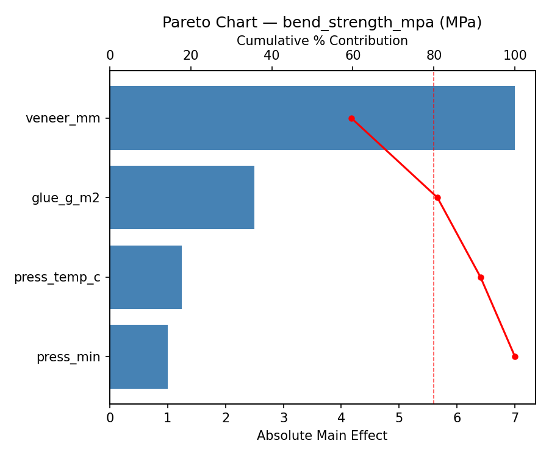
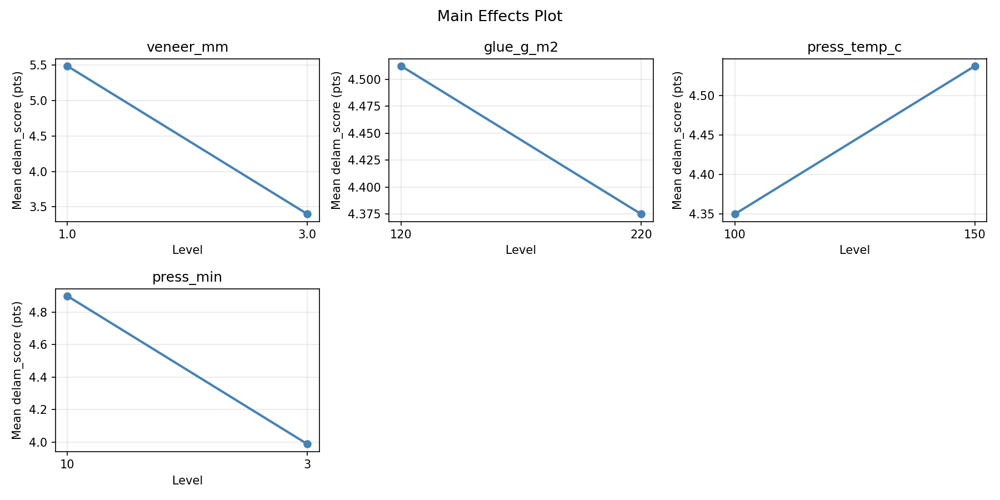
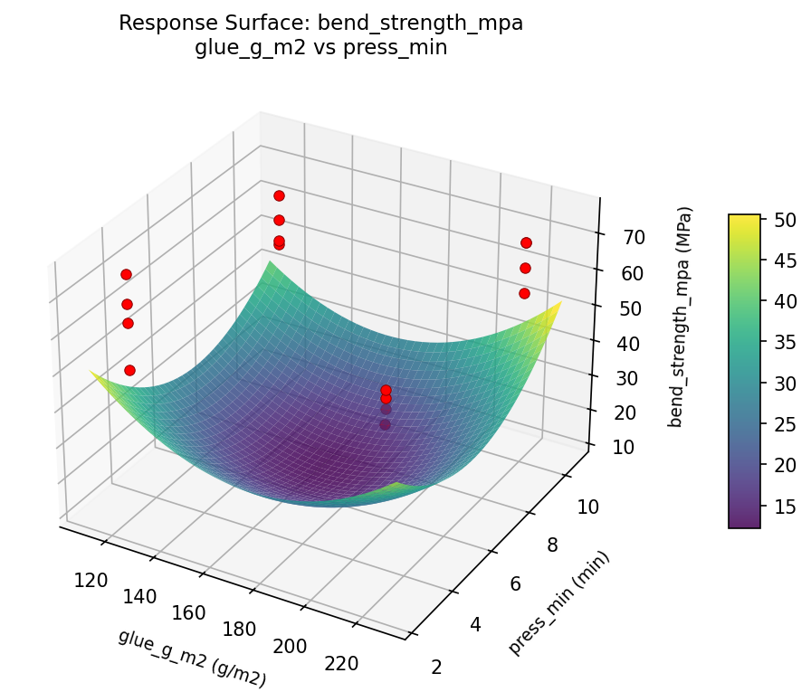
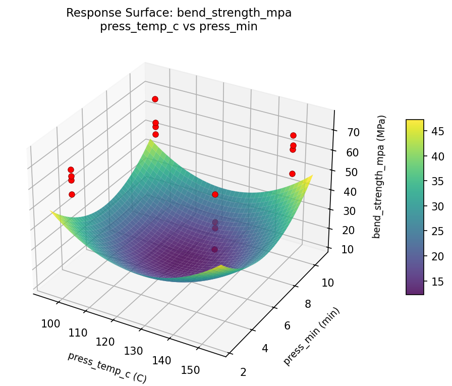
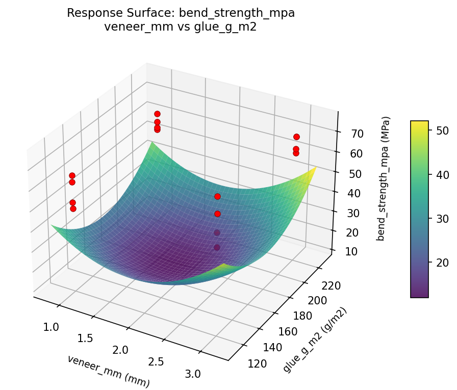
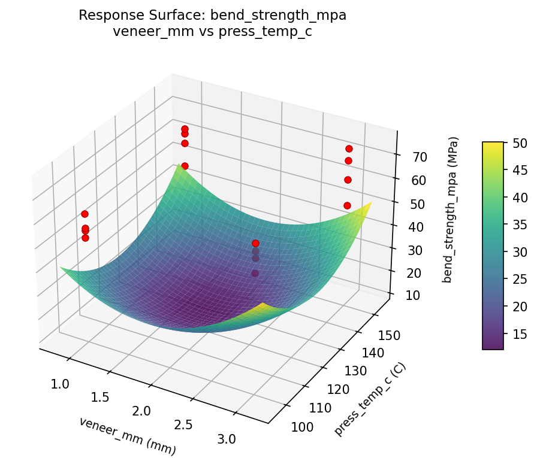
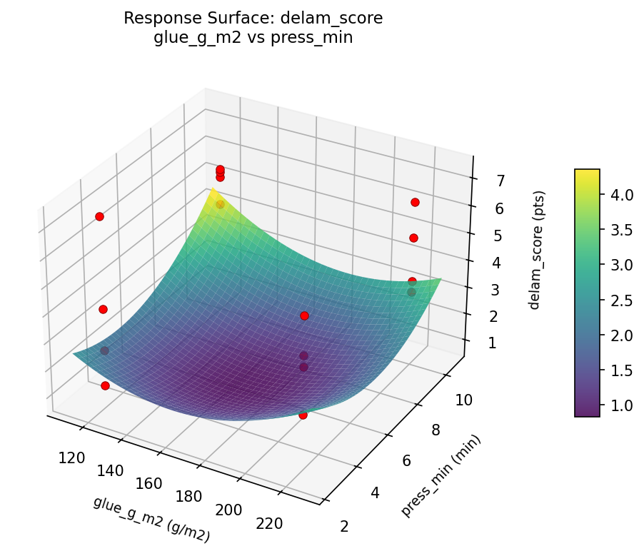
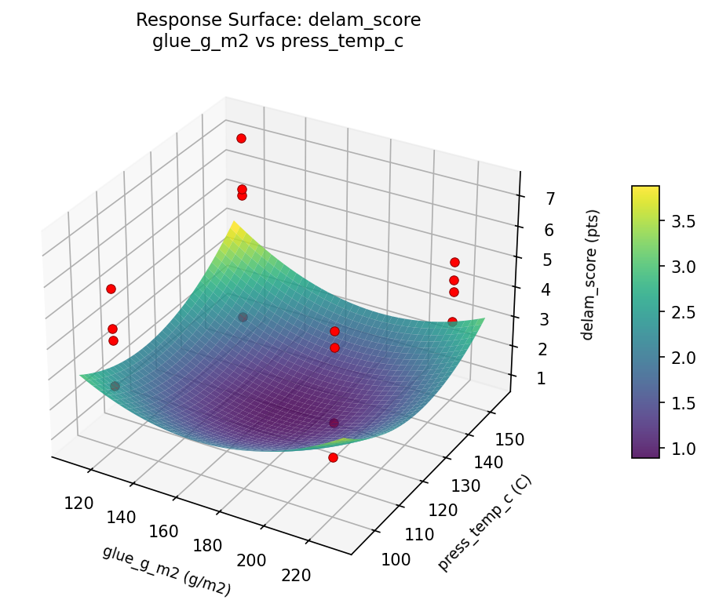
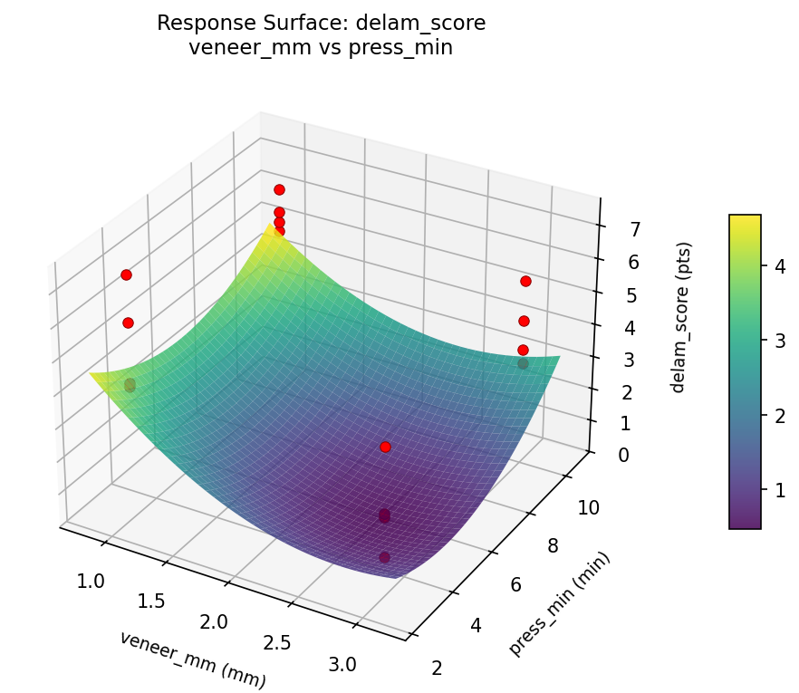

Summary
This experiment investigates plywood layup optimization. Full factorial of veneer thickness, glue weight, press temperature, and press time to maximize bending strength and minimize delamination.
The design varies 4 factors: veneer mm (mm), ranging from 1.0 to 3.0, glue g m2 (g/m2), ranging from 120 to 220, press temp c (C), ranging from 100 to 150, and press min (min), ranging from 3 to 10. The goal is to optimize 2 responses: bend strength mpa (MPa) (maximize) and delam score (pts) (minimize). Fixed conditions held constant across all runs include species = birch, layers = 5.
A full factorial design was used to explore all 16 possible combinations of the 4 factors at two levels. This guarantees that every main effect and interaction can be estimated independently, at the cost of a larger experiment (16 runs).
Quadratic response surface models were fitted to capture potential curvature and factor interactions. The RSM contour plots below visualize how pairs of factors jointly affect each response.
Key Findings
For bend strength mpa, the most influential factors were press temp c (70.9%), veneer mm (14.5%), glue g m2 (12.7%). The best observed value was 75.0 (at veneer mm = 3.0, glue g m2 = 120, press temp c = 150).
For delam score, the most influential factors were press temp c (52.4%), press min (24.7%), glue g m2 (21.1%). The best observed value was 1.2 (at veneer mm = 3.0, glue g m2 = 120, press temp c = 150).
Recommended Next Steps
- Consider whether any fixed factors should be varied in a future study.
Experimental Setup
Factors
| Factor | Low | High | Unit |
|---|
veneer_mm | 1.0 | 3.0 | mm |
glue_g_m2 | 120 | 220 | g/m2 |
press_temp_c | 100 | 150 | C |
press_min | 3 | 10 | min |
Fixed: species = birch, layers = 5
Responses
| Response | Direction | Unit |
|---|
bend_strength_mpa | ↑ maximize | MPa |
delam_score | ↓ minimize | pts |
Configuration
{
"metadata": {
"name": "Plywood Layup Optimization",
"description": "Full factorial of veneer thickness, glue weight, press temperature, and press time to maximize bending strength and minimize delamination"
},
"factors": [
{
"name": "veneer_mm",
"levels": [
"1.0",
"3.0"
],
"type": "continuous",
"unit": "mm"
},
{
"name": "glue_g_m2",
"levels": [
"120",
"220"
],
"type": "continuous",
"unit": "g/m2"
},
{
"name": "press_temp_c",
"levels": [
"100",
"150"
],
"type": "continuous",
"unit": "C"
},
{
"name": "press_min",
"levels": [
"3",
"10"
],
"type": "continuous",
"unit": "min"
}
],
"fixed_factors": {
"species": "birch",
"layers": "5"
},
"responses": [
{
"name": "bend_strength_mpa",
"optimize": "maximize",
"unit": "MPa"
},
{
"name": "delam_score",
"optimize": "minimize",
"unit": "pts"
}
],
"settings": {
"operation": "full_factorial",
"test_script": "use_cases/208_plywood_layup/sim.sh"
}
}
Experimental Matrix
The Full Factorial Design produces 16 runs. Each row is one experiment with specific factor settings.
| Run | veneer_mm | glue_g_m2 | press_temp_c | press_min |
|---|
| 1 | 1.0 | 220 | 150 | 10 |
| 2 | 3.0 | 120 | 100 | 10 |
| 3 | 1.0 | 220 | 100 | 10 |
| 4 | 1.0 | 220 | 150 | 3 |
| 5 | 3.0 | 220 | 150 | 3 |
| 6 | 3.0 | 120 | 150 | 3 |
| 7 | 3.0 | 220 | 100 | 3 |
| 8 | 3.0 | 120 | 100 | 3 |
| 9 | 1.0 | 120 | 100 | 10 |
| 10 | 1.0 | 120 | 150 | 3 |
| 11 | 3.0 | 220 | 100 | 10 |
| 12 | 3.0 | 220 | 150 | 10 |
| 13 | 1.0 | 220 | 100 | 3 |
| 14 | 3.0 | 120 | 150 | 10 |
| 15 | 1.0 | 120 | 100 | 3 |
| 16 | 1.0 | 120 | 150 | 10 |
Step-by-Step Workflow
1
Preview the design
$ python doe.py info --config use_cases/208_plywood_layup/config.json
2
Generate the runner script
$ python doe.py generate --config use_cases/208_plywood_layup/config.json \
--output use_cases/208_plywood_layup/results/run.sh --seed 42
3
Execute the experiments
$ bash use_cases/208_plywood_layup/results/run.sh
4
Analyze results
$ python doe.py analyze --config use_cases/208_plywood_layup/config.json
5
Get optimization recommendations
$ python doe.py optimize --config use_cases/208_plywood_layup/config.json
6
Multi-objective optimization
With 2 competing responses, use --multi to find the best compromise via Derringer–Suich desirability.
$ python doe.py optimize --config use_cases/208_plywood_layup/config.json --multi
7
Generate the HTML report
$ python doe.py report --config use_cases/208_plywood_layup/config.json \
--output use_cases/208_plywood_layup/results/report.html
Features Exercised
| Feature | Value |
|---|
| Design type | full_factorial |
| Factor types | continuous (all 4) |
| Arg style | double-dash |
| Responses | 2 (bend_strength_mpa ↑, delam_score ↓) |
| Total runs | 16 |
Analysis Results
Generated from actual experiment runs using the DOE Helper Tool.
Response: bend_strength_mpa
Top factors: press_temp_c (70.9%), veneer_mm (14.5%), glue_g_m2 (12.7%).
ANOVA
| Source | DF | SS | MS | F | p-value |
|---|
| Source | DF | SS | MS | F | p-value |
| veneer_mm | 1 | 16.0000 | 16.0000 | 0.525 | 0.5010 |
| glue_g_m2 | 1 | 12.2500 | 12.2500 | 0.402 | 0.5538 |
| press_temp_c | 1 | 380.2500 | 380.2500 | 12.488 | 0.0167 |
| press_min | 1 | 0.2500 | 0.2500 | 0.008 | 0.9313 |
| veneer_mm*glue_g_m2 | 1 | 81.0000 | 81.0000 | 2.660 | 0.1638 |
| veneer_mm*press_temp_c | 1 | 49.0000 | 49.0000 | 1.609 | 0.2605 |
| veneer_mm*press_min | 1 | 36.0000 | 36.0000 | 1.182 | 0.3265 |
| glue_g_m2*press_temp_c | 1 | 12.2500 | 12.2500 | 0.402 | 0.5538 |
| glue_g_m2*press_min | 1 | 42.2500 | 42.2500 | 1.388 | 0.2918 |
| press_temp_c*press_min | 1 | 42.2500 | 42.2500 | 1.388 | 0.2918 |
| Error | 5 | 152.2500 | 30.4500 | | |
| Total | 15 | 823.7500 | 54.9167 | | |
Pareto Chart

Main Effects Plot

Response: delam_score
Top factors: press_temp_c (52.4%), press_min (24.7%), glue_g_m2 (21.1%).
ANOVA
| Source | DF | SS | MS | F | p-value |
|---|
| Source | DF | SS | MS | F | p-value |
| veneer_mm | 1 | 0.0056 | 0.0056 | 0.002 | 0.9627 |
| glue_g_m2 | 1 | 0.7656 | 0.7656 | 0.329 | 0.5909 |
| press_temp_c | 1 | 4.7306 | 4.7306 | 2.035 | 0.2131 |
| press_min | 1 | 1.0506 | 1.0506 | 0.452 | 0.5312 |
| veneer_mm*glue_g_m2 | 1 | 1.0506 | 1.0506 | 0.452 | 0.5312 |
| veneer_mm*press_temp_c | 1 | 8.2656 | 8.2656 | 3.556 | 0.1180 |
| veneer_mm*press_min | 1 | 3.7056 | 3.7056 | 1.594 | 0.2624 |
| glue_g_m2*press_temp_c | 1 | 0.4556 | 0.4556 | 0.196 | 0.6765 |
| glue_g_m2*press_min | 1 | 2.3256 | 2.3256 | 1.000 | 0.3631 |
| press_temp_c*press_min | 1 | 5.8806 | 5.8806 | 2.530 | 0.1726 |
| Error | 5 | 11.6231 | 2.3246 | | |
| Total | 15 | 39.8594 | 2.6573 | | |
Pareto Chart

Main Effects Plot

Response Surface Plots
3D surfaces fitted with quadratic RSM. Red dots are observed data points.
bend strength mpa glue g m2 vs press min

bend strength mpa glue g m2 vs press temp c

bend strength mpa press temp c vs press min

bend strength mpa veneer mm vs glue g m2

bend strength mpa veneer mm vs press min

bend strength mpa veneer mm vs press temp c

delam score glue g m2 vs press min

delam score glue g m2 vs press temp c

delam score press temp c vs press min

delam score veneer mm vs glue g m2

delam score veneer mm vs press min

delam score veneer mm vs press temp c

Multi-Objective Optimization
When responses compete, Derringer–Suich desirability finds the best compromise.
Each response is scaled to a 0–1 desirability, then combined via a weighted geometric mean.
Overall Desirability
D = 0.9545
Per-Response Desirability
| Response | Weight | Desirability | Predicted | Dir |
|---|
bend_strength_mpa |
1.5 |
|
75.00 0.9545 75.00 MPa |
↑ |
delam_score |
2.0 |
|
1.20 0.9545 1.20 pts |
↓ |
Recommended Settings
| Factor | Value |
|---|
veneer_mm | 1.0 mm |
glue_g_m2 | 120 g/m2 |
press_temp_c | 100 C |
press_min | 3 min |
Source: from observed run #1
Trade-off Summary
Sacrifice = how much worse than single-objective best.
| Response | Predicted | Best Observed | Sacrifice |
|---|
delam_score | 1.20 | 1.20 | +0.00 |
Top 3 Runs by Desirability
| Run | D | Factor Settings |
|---|
| #12 | 0.7227 | veneer_mm=1.0, glue_g_m2=120, press_temp_c=150, press_min=10 |
| #16 | 0.7158 | veneer_mm=3.0, glue_g_m2=120, press_temp_c=100, press_min=3 |
Model Quality
| Response | R² | Type |
|---|
delam_score | 0.3867 | linear |
Full Multi-Objective Output
============================================================
MULTI-OBJECTIVE OPTIMIZATION
Method: Derringer-Suich Desirability Function
============================================================
Overall desirability: D = 0.9545
Response Weight Desirability Predicted Direction
---------------------------------------------------------------------
bend_strength_mpa 1.5 0.9545 75.00 MPa ↑
delam_score 2.0 0.9545 1.20 pts ↓
Recommended settings:
veneer_mm = 1.0 mm
glue_g_m2 = 120 g/m2
press_temp_c = 100 C
press_min = 3 min
(from observed run #1)
Trade-off summary:
bend_strength_mpa: 75.00 (best observed: 75.00, sacrifice: +0.00)
delam_score: 1.20 (best observed: 1.20, sacrifice: +0.00)
Model quality:
bend_strength_mpa: R² = 0.5451 (linear)
delam_score: R² = 0.3867 (linear)
Top 3 observed runs by overall desirability:
1. Run #1 (D=0.9545): veneer_mm=1.0, glue_g_m2=120, press_temp_c=100, press_min=3
2. Run #12 (D=0.7227): veneer_mm=1.0, glue_g_m2=120, press_temp_c=150, press_min=10
3. Run #16 (D=0.7158): veneer_mm=3.0, glue_g_m2=120, press_temp_c=100, press_min=3
Full Analysis Output
=== Main Effects: bend_strength_mpa ===
Factor Effect Std Error % Contribution
--------------------------------------------------------------
press_temp_c -9.7500 1.8526 70.9%
veneer_mm 2.0000 1.8526 14.5%
glue_g_m2 -1.7500 1.8526 12.7%
press_min -0.2500 1.8526 1.8%
=== ANOVA Table: bend_strength_mpa ===
Source DF SS MS F p-value
-----------------------------------------------------------------------------
veneer_mm 1 16.0000 16.0000 0.525 0.5010
glue_g_m2 1 12.2500 12.2500 0.402 0.5538
press_temp_c 1 380.2500 380.2500 12.488 0.0167
press_min 1 0.2500 0.2500 0.008 0.9313
veneer_mm*glue_g_m2 1 81.0000 81.0000 2.660 0.1638
veneer_mm*press_temp_c 1 49.0000 49.0000 1.609 0.2605
veneer_mm*press_min 1 36.0000 36.0000 1.182 0.3265
glue_g_m2*press_temp_c 1 12.2500 12.2500 0.402 0.5538
glue_g_m2*press_min 1 42.2500 42.2500 1.388 0.2918
press_temp_c*press_min 1 42.2500 42.2500 1.388 0.2918
Error 5 152.2500 30.4500
Total 15 823.7500 54.9167
=== Interaction Effects: bend_strength_mpa ===
Factor A Factor B Interaction % Contribution
------------------------------------------------------------------------
veneer_mm glue_g_m2 -4.5000 23.4%
veneer_mm press_temp_c 3.5000 18.2%
glue_g_m2 press_min -3.2500 16.9%
press_temp_c press_min -3.2500 16.9%
veneer_mm press_min 3.0000 15.6%
glue_g_m2 press_temp_c -1.7500 9.1%
=== Summary Statistics: bend_strength_mpa ===
veneer_mm:
Level N Mean Std Min Max
------------------------------------------------------------
1.0 8 60.1250 8.5763 49.0000 75.0000
3.0 8 62.1250 6.4683 52.0000 70.0000
glue_g_m2:
Level N Mean Std Min Max
------------------------------------------------------------
120 8 62.0000 6.2335 51.0000 70.0000
220 8 60.2500 8.7790 49.0000 75.0000
press_temp_c:
Level N Mean Std Min Max
------------------------------------------------------------
100 8 66.0000 5.8554 56.0000 75.0000
150 8 56.2500 5.3918 49.0000 64.0000
press_min:
Level N Mean Std Min Max
------------------------------------------------------------
10 8 61.2500 7.1664 51.0000 75.0000
3 8 61.0000 8.1416 49.0000 70.0000
=== Main Effects: delam_score ===
Factor Effect Std Error % Contribution
--------------------------------------------------------------
press_temp_c 1.0875 0.4075 52.4%
press_min 0.5125 0.4075 24.7%
glue_g_m2 0.4375 0.4075 21.1%
veneer_mm -0.0375 0.4075 1.8%
=== ANOVA Table: delam_score ===
Source DF SS MS F p-value
-----------------------------------------------------------------------------
veneer_mm 1 0.0056 0.0056 0.002 0.9627
glue_g_m2 1 0.7656 0.7656 0.329 0.5909
press_temp_c 1 4.7306 4.7306 2.035 0.2131
press_min 1 1.0506 1.0506 0.452 0.5312
veneer_mm*glue_g_m2 1 1.0506 1.0506 0.452 0.5312
veneer_mm*press_temp_c 1 8.2656 8.2656 3.556 0.1180
veneer_mm*press_min 1 3.7056 3.7056 1.594 0.2624
glue_g_m2*press_temp_c 1 0.4556 0.4556 0.196 0.6765
glue_g_m2*press_min 1 2.3256 2.3256 1.000 0.3631
press_temp_c*press_min 1 5.8806 5.8806 2.530 0.1726
Error 5 11.6231 2.3246
Total 15 39.8594 2.6573
=== Interaction Effects: delam_score ===
Factor A Factor B Interaction % Contribution
------------------------------------------------------------------------
veneer_mm press_temp_c -1.4375 27.5%
press_temp_c press_min 1.2125 23.2%
veneer_mm press_min -0.9625 18.4%
glue_g_m2 press_min 0.7625 14.6%
veneer_mm glue_g_m2 0.5125 9.8%
glue_g_m2 press_temp_c 0.3375 6.5%
=== Summary Statistics: delam_score ===
veneer_mm:
Level N Mean Std Min Max
------------------------------------------------------------
1.0 8 4.4625 1.9515 1.2000 7.3000
3.0 8 4.4250 1.3730 2.4000 6.4000
glue_g_m2:
Level N Mean Std Min Max
------------------------------------------------------------
120 8 4.2250 1.3646 2.4000 5.9000
220 8 4.6625 1.9294 1.2000 7.3000
press_temp_c:
Level N Mean Std Min Max
------------------------------------------------------------
100 8 3.9000 1.6903 1.2000 6.4000
150 8 4.9875 1.4701 2.4000 7.3000
press_min:
Level N Mean Std Min Max
------------------------------------------------------------
10 8 4.1875 1.7142 1.2000 6.4000
3 8 4.7000 1.6142 2.5000 7.3000
Optimization Recommendations
=== Optimization: bend_strength_mpa ===
Direction: maximize
Best observed run: #1
veneer_mm = 3.0
glue_g_m2 = 120
press_temp_c = 150
press_min = 3
Value: 75.0
RSM Model (linear, R² = 0.1150, Adj R² = -0.2068):
Coefficients:
intercept +61.1250
veneer_mm -0.1250
glue_g_m2 -2.3750
press_temp_c -0.5000
press_min +0.1250
RSM Model (quadratic, R² = 0.3575, Adj R² = -8.6373):
Coefficients:
intercept +12.2250
veneer_mm -0.1250
glue_g_m2 -2.3750
press_temp_c -0.5000
press_min +0.1250
veneer_mm*glue_g_m2 -0.3750
veneer_mm*press_temp_c +1.5000
veneer_mm*press_min +2.3750
glue_g_m2*press_temp_c +1.2500
glue_g_m2*press_min +1.3750
press_temp_c*press_min -1.0000
veneer_mm^2 +12.2250
glue_g_m2^2 +12.2250
press_temp_c^2 +12.2250
press_min^2 +12.2250
Curvature analysis:
glue_g_m2 coef=+12.2250 convex (has a minimum)
press_min coef=+12.2250 convex (has a minimum)
veneer_mm coef=+12.2250 convex (has a minimum)
press_temp_c coef=+12.2250 convex (has a minimum)
Notable interactions:
veneer_mm*press_min coef=+2.3750 (synergistic)
veneer_mm*press_temp_c coef=+1.5000 (synergistic)
glue_g_m2*press_min coef=+1.3750 (synergistic)
glue_g_m2*press_temp_c coef=+1.2500 (synergistic)
press_temp_c*press_min coef=-1.0000 (antagonistic)
veneer_mm*glue_g_m2 coef=-0.3750 (antagonistic)
Predicted optimum (from linear model, at observed points):
veneer_mm = 1.0
glue_g_m2 = 120
press_temp_c = 100
press_min = 10
Predicted value: 64.2500
Surface optimum (via L-BFGS-B, linear model):
veneer_mm = 1
glue_g_m2 = 120
press_temp_c = 100
press_min = 10
Predicted value: 64.2500
Model quality: Weak fit — consider adding center points or using a different design.
Factor importance:
1. glue_g_m2 (effect: -4.8, contribution: 76.0%)
2. press_temp_c (effect: -1.0, contribution: 16.0%)
3. veneer_mm (effect: -0.2, contribution: 4.0%)
4. press_min (effect: -0.2, contribution: 4.0%)
=== Optimization: delam_score ===
Direction: minimize
Best observed run: #1
veneer_mm = 3.0
glue_g_m2 = 120
press_temp_c = 150
press_min = 3
Value: 1.2
RSM Model (linear, R² = 0.0545, Adj R² = -0.2893):
Coefficients:
intercept +4.4438
veneer_mm +0.0563
glue_g_m2 +0.1937
press_temp_c -0.0937
press_min +0.2937
RSM Model (quadratic, R² = 0.2845, Adj R² = -9.7320):
Coefficients:
intercept +0.8887
veneer_mm +0.0562
glue_g_m2 +0.1937
press_temp_c -0.0937
press_min +0.2937
veneer_mm*glue_g_m2 +0.0312
veneer_mm*press_temp_c -0.4062
veneer_mm*press_min -0.5188
glue_g_m2*press_temp_c +0.2562
glue_g_m2*press_min -0.0812
press_temp_c*press_min +0.2562
veneer_mm^2 +0.8887
glue_g_m2^2 +0.8887
press_temp_c^2 +0.8887
press_min^2 +0.8887
Curvature analysis:
press_temp_c coef=+0.8887 convex (has a minimum)
press_min coef=+0.8887 convex (has a minimum)
veneer_mm coef=+0.8887 convex (has a minimum)
glue_g_m2 coef=+0.8887 convex (has a minimum)
Notable interactions:
veneer_mm*press_min coef=-0.5188 (antagonistic)
veneer_mm*press_temp_c coef=-0.4062 (antagonistic)
Predicted optimum (from linear model, at observed points):
veneer_mm = 3.0
glue_g_m2 = 220
press_temp_c = 100
press_min = 10
Predicted value: 5.0813
Surface optimum (via L-BFGS-B, linear model):
veneer_mm = 1
glue_g_m2 = 120
press_temp_c = 150
press_min = 3
Predicted value: 3.8063
Model quality: Weak fit — consider adding center points or using a different design.
Factor importance:
1. press_min (effect: -0.6, contribution: 46.1%)
2. glue_g_m2 (effect: 0.4, contribution: 30.4%)
3. press_temp_c (effect: -0.2, contribution: 14.7%)
4. veneer_mm (effect: 0.1, contribution: 8.8%)